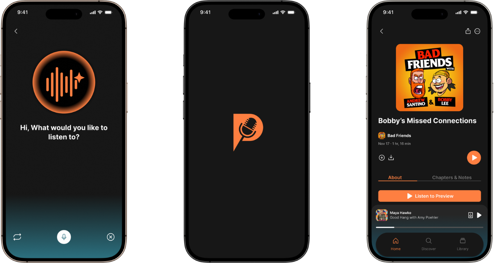

Podly
View PrototypeFind Your Podcast With Podly
Podly is a podcast app that is made to better tailor the suggestions to you. Taking information like where and when you listen to podcasts, your mood, your lifestyle, and more, Podly will properly recommend a podcast to you rather than a general result even using tools like AI that listens to you and points you toward Podcast results you may like.
I became part of a team to work on this prototype after my classmate, Ella Ramsey, pitched the idea for Podly out of many other pitches students had to vote for. Podly was in my top choices and I wanted to bring Ella's vision and I believe we did that successfully.
